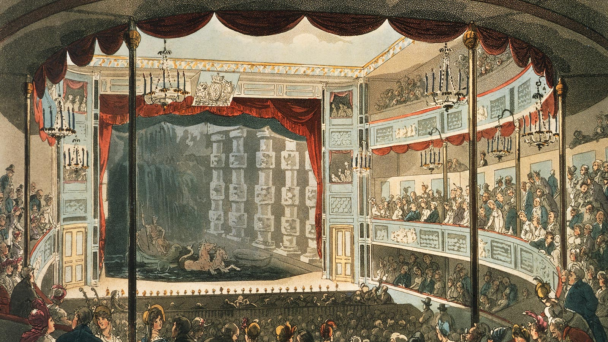

Theatre News and History
Latest News

Here, you'll find the latest information and developments in the world of theatre, from the biggest productions on Broadway to the up-and-coming shows in local theaters. We'll bring you interviews with actors, directors, and other members of the theatrical community, as well as reviews of the latest productions and insights into the creative process behind them. Whether you're a seasoned theatre-goer or just discovering the magic of live performance, we're here to keep you informed and entertained. So sit back, relax, and let's dive into the exciting world of theatre!
The latest news in the Theatre industry are:
- The Tony Awards 2023
- Upcoming movie musicals
- Broadway Newcomers
History Of Theatre
Welcome to our exploration of theatre history, where we'll take a journey through time to discover the roots and evolution of one of humanity's oldest art forms. From ancient Greek tragedies to the glitz and glamour of modern Broadway, we'll delve into the fascinating stories and characters that have shaped theatre as we know it today. We'll explore the groundbreaking innovations of playwrights, directors, actors, and designers throughout the centuries, and examine how theatre has reflected and influenced the societies and cultures in which it was created. Join us as we uncover the rich and diverse history of theatre, and discover how this timeless art form continues to captivate and inspire audiences around the world.
Some of the keys explored are:
- Ancient Greek Theatre
- Ancient Egyptian Theatre
- Renaissance Theatre
- Modern Theatre